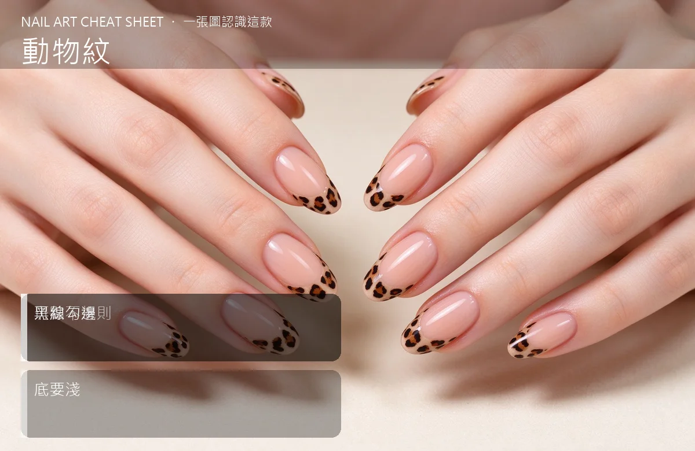

美甲動物紋是什麼？入門入門攻略
動物紋就是豹紋、斑馬紋、蛇紋那種野性圖案，重點是『斑點不規則＋黑線勾邊』。
動物紋原理與辨識重點：美甲師不說的斑點不規則
豹紋不是畫一圈一圈圓——它是『淺棕底＋不規則黑邊小斑點』，每個斑點都歪歪的、有大有小，才像真豹。斑馬紋是黑白條紋交錯、蛇紋是方形鱗片排列。共同點是：底色要淺、黑色勾邊要乾淨、圖案不要畫得太對稱。
誰適合做動物紋？野性款對號入座
想做個性款、秋冬款、夜店款的人；歐美風、Y2K 風都常拿它當主角。
動物紋美甲施作步驟：豹紋／斑馬紋
上淺棕或米色底照燈 → 用棕色畫不規則小斑 → 照燈 → 用細黑筆把每個斑點勾一個不完整的黑邊（不要封成一圈）→ 照燈 → 封層。
動物紋優缺點分析：美甲持久度與傷甲評估
| 優點 | 說明 |
|---|---|
| 做一次就有記憶點，客人只要一句『我要豹紋』你就能交差，是常態加單。 | 是歐美流派的招牌，入門就能上手 |
| 缺點 | 說明 |
| 畫太規則會像『小學生複製貼上』，失去動物紋隨性的野性。 | 前置與千萬別用圓規畫正圓、也別每個斑點一樣大。故意歪、故意不規則，才是豹紋看起來高級的關鍵。沒顧好會打折 |

動物紋新手雷區：黑線勾邊與常見錯誤
注意：千萬別用圓規畫正圓、也別每個斑點一樣大。故意歪、故意不規則，才是豹紋看起來高級的關鍵。
動物紋和其他美甲做法的差別比較
常跟全黑、全白跳指搭——一隻手做豹紋、其他指純黑或純白；也可跟金色鏡面混，黑金豹紋是派對款。
動物紋美甲常見問題 FAQ
Q：豹紋一定要棕色嗎？ A：不一定。粉色豹紋、黑底白豹紋都很潮，重點是兩色對比夠、勾邊夠清楚。
Q：新手先練哪一種動物紋？ A：從豹紋開始，因為它不對稱、容錯率高。斑馬紋要直線相等，反而比較難。